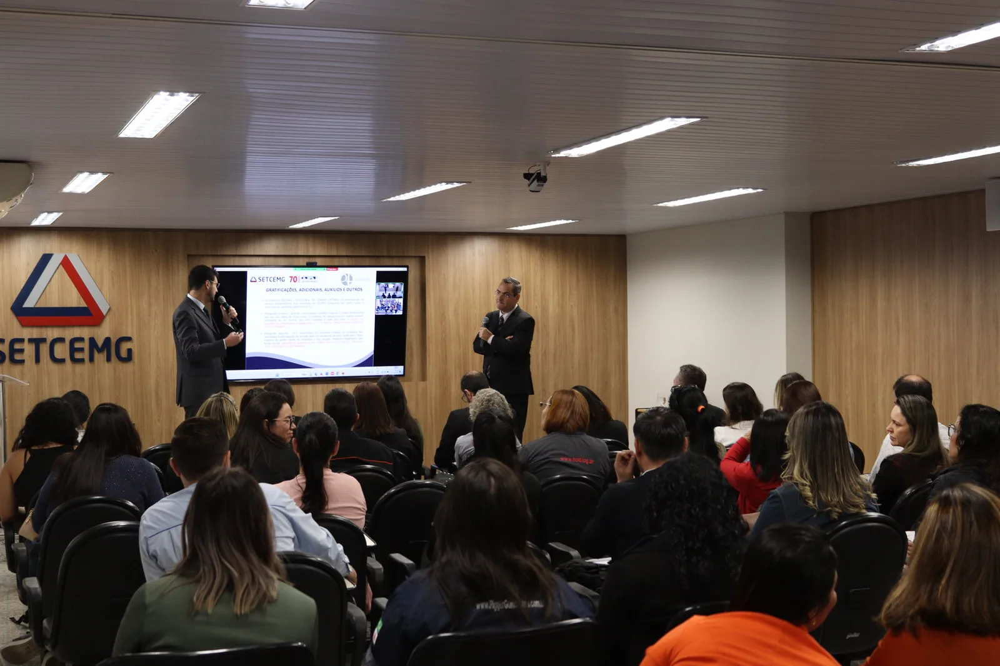
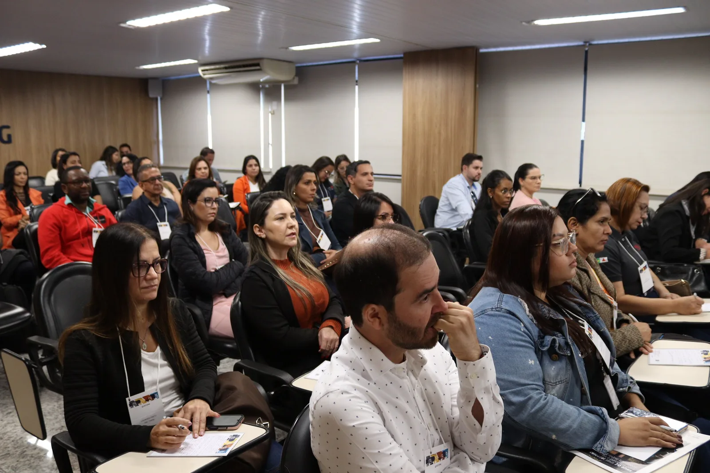
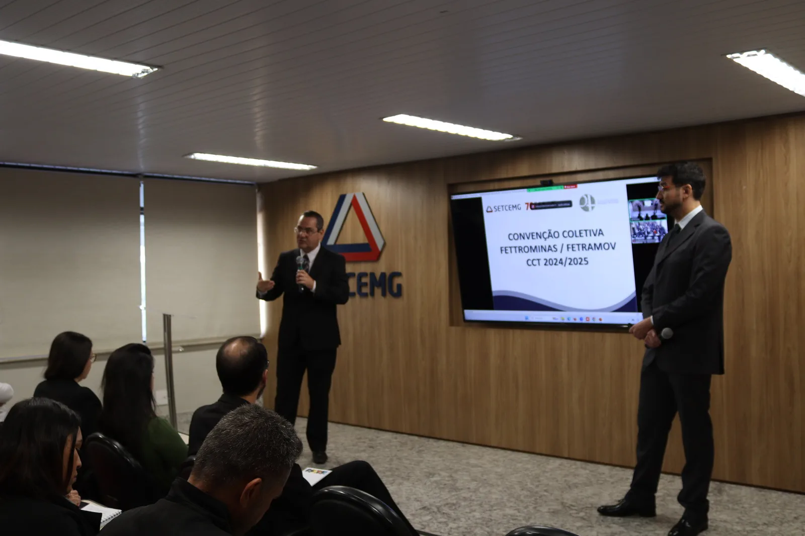

Café com Palestra: Convenção Coletiva de Trabalho 2024/2025
Na última sexta-feira, 21 de junho, o escritório Paulo Teodoro Advogados Associados, em parceria com o SETCEMG, realizou um evento importante para abordar as mudanças na Convenção Coletiva de Trabalho 2024/2025. A palestra foi conduzida por nossos especialistas em Direito Trabalhista e Civil, Dr. Jeferson Costa e Dr. João Gabriel Guerreiro.
Fotos: SETCEMG
Durante a palestra, os participantes tiveram a oportunidade de esclarecer dúvidas sobre as principais mudanças introduzidas pela nova convenção. Alguns dos pontos destacados incluíram:
- Diária dos Motoristas: Ajustes nas políticas de remuneração diária para motoristas.
- Auxílio-Transporte: Mudanças e atualizações nas regras de concessão do benefício.
- Plano de Saúde: Novas diretrizes para a oferta de planos de saúde aos colaboradores.
- Cartão Benefício: Alterações nas condições de uso e concessão do cartão benefício.
- Salário: Reajustes salariais e suas implicações.
- Jornada de Trabalho Especial: Novas regulamentações sobre jornadas de trabalho específicas.



Fotos: SETCEMG
O evento proporcionou um espaço valioso para que os participantes pudessem esclarecer dúvidas diretamente com nossos especialistas. Este tipo de interação é fundamental para garantir que todas as mudanças sejam compreendidas e implementadas corretamente.
Para aqueles que não puderam participar do evento ou que ainda possuem dúvidas sobre a nova Convenção Coletiva de Trabalho 2024/2025, nossa equipe está à disposição para ajudar. Entre em contato conosco para obter mais informações ou acesse o site do SETCEMG para detalhes adicionais.
Fique por dentro de outros treinamentos e conteúdos importantes seguindo nossas redes sociais!
Paulo Teodoro – Advogados Associados
- Eventos
- Artigos
- Saiba mais sobre o escritório ▸